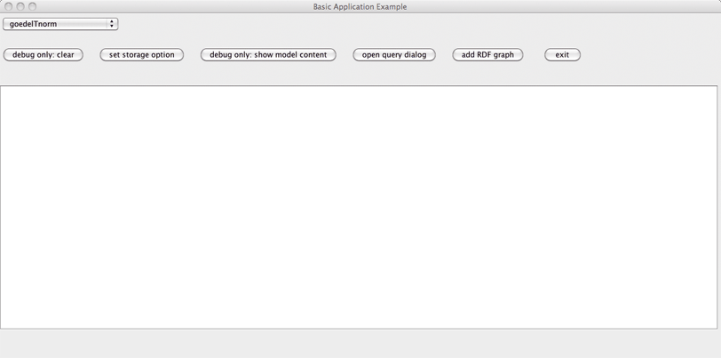
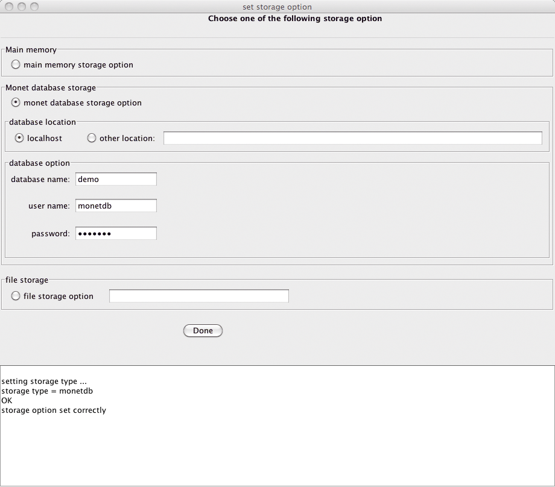
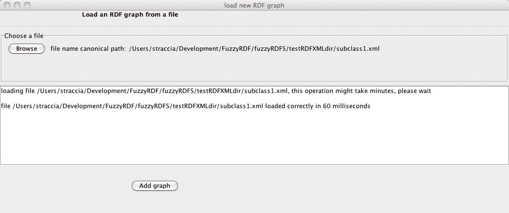
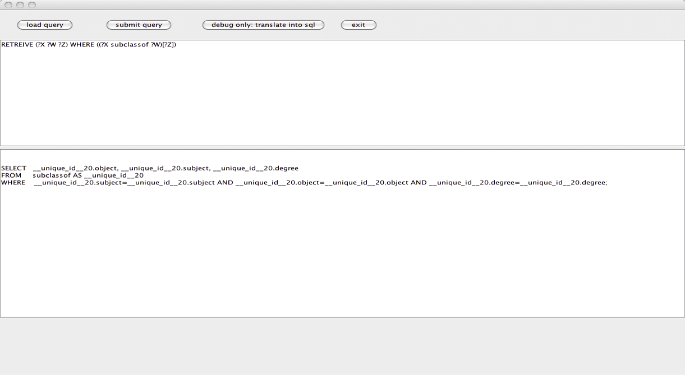
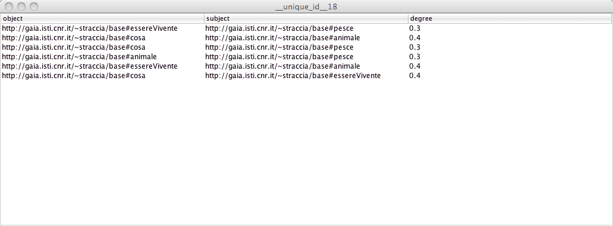

fuzzyRDF Software:
To run the software:
- Install the MonetDB database
- Start the DB engine
- Start fuzzyRDF.jar
- set-up storage option: monet database
- set-up correct database name and password
- select the t-nomr for propagation of degrees
- Add an RDFS graph (fuzzy or non fuzzy)
- Open query dialog to query the system
Some pictures: main window

Set storage options

Add a (fuzzy) RDFS graph

Querying a graph (the lower pane shows the translation of the query into SQL):

Results pane:
